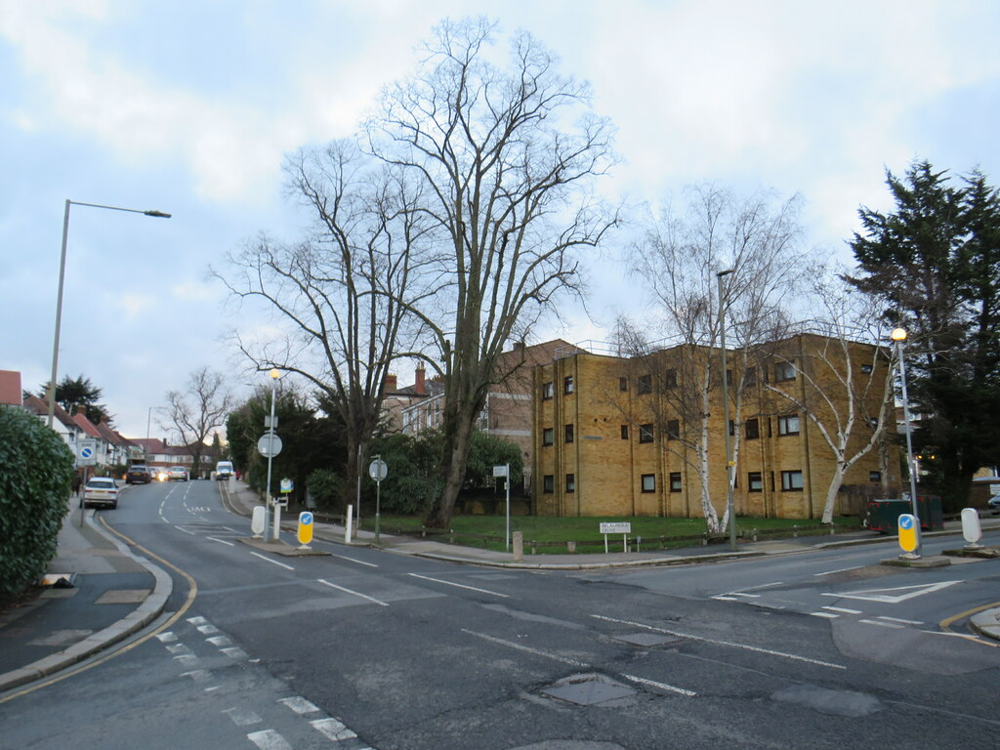

Roadside growth
Early shops appeared along Lodge Lane, while the wider road network began to turn North End into a more recognisable settlement.
Read more →
Barnet Council’s local history notes record North End in 1462. For centuries the area remained relatively rural; the enclosure of Finchley Common in 1816 helped open the way for more substantial development.

Early shops appeared along Lodge Lane, while the wider road network began to turn North End into a more recognisable settlement.
Read more →The station opened as Torrington Park on the Great Northern Railway, later taking the Woodside Park name. Rail access encouraged housing growth.
Find out more ↗Electric tram routes linked Finchley with neighbouring districts and helped reinforce the High Road as a retail and transport corridor.
Find out more ↗Victorian and Edwardian streets sit alongside later shops, leisure destinations and modern housing — the layers that make N12 recognisable.
Find out more ↗